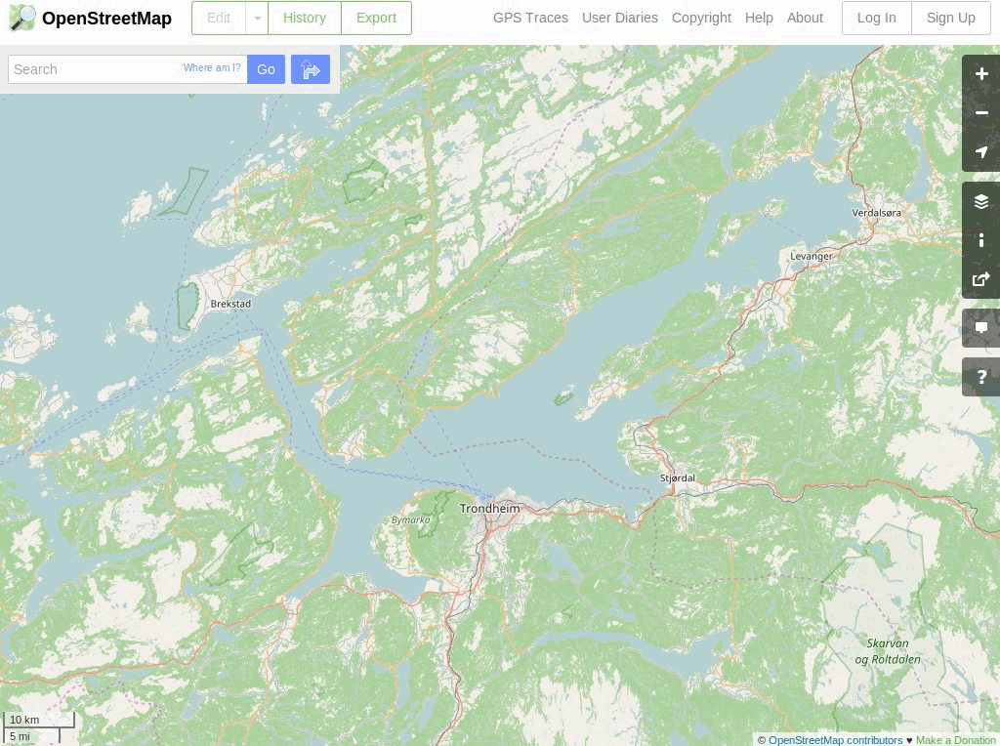

OpenStreetMap¶
Strumenti per mappare il mondo¶
OpenStreetMap è un progetto che ha come scopo principale quello di creare e fornire a chiunque li desideri dati geografici liberi come ad esempio mappe stradali. Il progetto è stato avviato perché la maggior parte delle mappe che si credono liberamente utilizzabili, hanno invece restrizioni legali o tecniche al loro utilizzo e ciò ne impedisce l’uso per scopi produttivi, creativi o inattesi.
Sono stati inclusi un certo numero di programmi: JOSM, Merkaartor, Osmosis, Osm2pgsql, e alcuni piccoli strumenti da linea di comando. Inoltre sono stati inclusi dati di esmpio recenti per la città che ha ospitato il FOSS4G e alcuni plugins di JOSM.
{kind=link}
Caratteristiche principali¶
- Dataset globale fortemente crowd-sourced
- Un numero di software di modifica tra cui scegliere.
- Un numero di programmi di rendering tra cui scegliere (inculsi quelli personalizzati e online)
- Uso libero
- Ampia integrazione con applicazioni geografiche
Dettagli¶
Website: https://www.openstreetmap.org/
Licenze:
- Dati OpenStreetMap: https://www.openstreetmap.org/copyright
- JOSM: GNU General Public License (GPL) version 2
- Raccolta dei plugin di JOSM: range da Di Pubblico Dominio a GPLv3
- Merkaartor: GNU General Public License (GPL) version 2
Versioni dei Software:
- JOSM: ultima snapshot stabile (svn r11427)
- Merkaartor: 0.18.2
- Osmosis: 0.44.1
- osm2pgsql: 0.88.1
Piattaforme supportate: GNU/Linux, Mac OSX, MS Windows
Interfacce API (dati): REST (via Xapi), XML
Supporto: https://www.openstreetmap.org/help